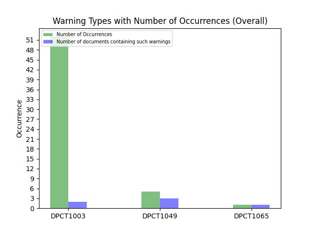

1. Number of Analysis Files: 3
2. Analysis Files:
/cluster.dp.cpp ; /kernel_wrapper2.dp.cpp ; /kernels.dp.cpp ;
3. Number of Warning Type: 3
4. Warning Code Type:
DPCT1003 ; DPCT1049 ; DPCT1065 ;
5. Total Number of Warnings: 58
6. Distribution Graph:
8. Detailed Warning Information (Before CTA)
| No. | Warning Code | File Path | Project Name | Line Number | Warning message |
|---|---|---|---|---|---|
| 1 | DPCT1003 | /cluster.dp.cpp | test_project | 262 | DPCT1003:28: Migrated API does not return error code. (*, 0) is inserted. You may need to rewrite this code. |
| 2 | DPCT1003 | /cluster.dp.cpp | test_project | 267 | DPCT1003:30: Migrated API does not return error code. (*, 0) is inserted. You may need to rewrite this code. |
| 3 | DPCT1003 | /cluster.dp.cpp | test_project | 272 | DPCT1003:31: Migrated API does not return error code. (*, 0) is inserted. You may need to rewrite this code. |
| 4 | DPCT1003 | /cluster.dp.cpp | test_project | 277 | DPCT1003:32: Migrated API does not return error code. (*, 0) is inserted. You may need to rewrite this code. |
| 5 | DPCT1003 | /cluster.dp.cpp | test_project | 282 | DPCT1003:33: Migrated API does not return error code. (*, 0) is inserted. You may need to rewrite this code. |
| 6 | DPCT1003 | /cluster.dp.cpp | test_project | 287 | DPCT1003:34: Migrated API does not return error code. (*, 0) is inserted. You may need to rewrite this code. |
| 7 | DPCT1003 | /cluster.dp.cpp | test_project | 292 | DPCT1003:35: Migrated API does not return error code. (*, 0) is inserted. You may need to rewrite this code. |
| 8 | DPCT1003 | /cluster.dp.cpp | test_project | 297 | DPCT1003:36: Migrated API does not return error code. (*, 0) is inserted. You may need to rewrite this code. |
| 9 | DPCT1003 | /cluster.dp.cpp | test_project | 327 | DPCT1003:37: Migrated API does not return error code. (*, 0) is inserted. You may need to rewrite this code. |
| 10 | DPCT1003 | /cluster.dp.cpp | test_project | 332 | DPCT1003:38: Migrated API does not return error code. (*, 0) is inserted. You may need to rewrite this code. |
| 11 | DPCT1003 | /cluster.dp.cpp | test_project | 337 | DPCT1003:39: Migrated API does not return error code. (*, 0) is inserted. You may need to rewrite this code. |
| 12 | DPCT1003 | /cluster.dp.cpp | test_project | 343 | DPCT1003:40: Migrated API does not return error code. (*, 0) is inserted. You may need to rewrite this code. |
| 13 | DPCT1003 | /cluster.dp.cpp | test_project | 349 | DPCT1003:41: Migrated API does not return error code. (*, 0) is inserted. You may need to rewrite this code. |
| 14 | DPCT1003 | /cluster.dp.cpp | test_project | 356 | DPCT1003:42: Migrated API does not return error code. (*, 0) is inserted. You may need to rewrite this code. |
| 15 | DPCT1003 | /cluster.dp.cpp | test_project | 365 | DPCT1003:43: Migrated API does not return error code. (*, 0) is inserted. You may need to rewrite this code. |
| 16 | DPCT1003 | /cluster.dp.cpp | test_project | 374 | DPCT1003:44: Migrated API does not return error code. (*, 0) is inserted. You may need to rewrite this code. |
| 17 | DPCT1003 | /cluster.dp.cpp | test_project | 386 | DPCT1003:45: Migrated API does not return error code. (*, 0) is inserted. You may need to rewrite this code. |
| 18 | DPCT1003 | /cluster.dp.cpp | test_project | 393 | DPCT1003:46: Migrated API does not return error code. (*, 0) is inserted. You may need to rewrite this code. |
| 19 | DPCT1003 | /cluster.dp.cpp | test_project | 413 | DPCT1003:47: Migrated API does not return error code. (*, 0) is inserted. You may need to rewrite this code. |
| 20 | DPCT1003 | /cluster.dp.cpp | test_project | 419 | DPCT1003:48: Migrated API does not return error code. (*, 0) is inserted. You may need to rewrite this code. |
| 21 | DPCT1003 | /cluster.dp.cpp | test_project | 425 | DPCT1003:49: Migrated API does not return error code. (*, 0) is inserted. You may need to rewrite this code. |
| 22 | DPCT1003 | /cluster.dp.cpp | test_project | 431 | DPCT1003:50: Migrated API does not return error code. (*, 0) is inserted. You may need to rewrite this code. |
| 23 | DPCT1003 | /cluster.dp.cpp | test_project | 439 | DPCT1003:51: Migrated API does not return error code. (*, 0) is inserted. You may need to rewrite this code. |
| 24 | DPCT1003 | /cluster.dp.cpp | test_project | 447 | DPCT1003:52: Migrated API does not return error code. (*, 0) is inserted. You may need to rewrite this code. |
| 25 | DPCT1003 | /cluster.dp.cpp | test_project | 456 | DPCT1003:53: Migrated API does not return error code. (*, 0) is inserted. You may need to rewrite this code. |
| 26 | DPCT1003 | /cluster.dp.cpp | test_project | 466 | DPCT1003:54: Migrated API does not return error code. (*, 0) is inserted. You may need to rewrite this code. |
| 27 | DPCT1003 | /cluster.dp.cpp | test_project | 487 | DPCT1003:55: Migrated API does not return error code. (*, 0) is inserted. You may need to rewrite this code. |
| 28 | DPCT1003 | /cluster.dp.cpp | test_project | 493 | DPCT1003:56: Migrated API does not return error code. (*, 0) is inserted. You may need to rewrite this code. |
| 29 | DPCT1003 | /cluster.dp.cpp | test_project | 499 | DPCT1003:57: Migrated API does not return error code. (*, 0) is inserted. You may need to rewrite this code. |
| 30 | DPCT1003 | /cluster.dp.cpp | test_project | 507 | DPCT1003:58: Migrated API does not return error code. (*, 0) is inserted. You may need to rewrite this code. |
| 31 | DPCT1003 | /cluster.dp.cpp | test_project | 515 | DPCT1003:59: Migrated API does not return error code. (*, 0) is inserted. You may need to rewrite this code. |
| 32 | DPCT1003 | /cluster.dp.cpp | test_project | 524 | DPCT1003:60: Migrated API does not return error code. (*, 0) is inserted. You may need to rewrite this code. |
| 33 | DPCT1003 | /cluster.dp.cpp | test_project | 534 | DPCT1003:61: Migrated API does not return error code. (*, 0) is inserted. You may need to rewrite this code. |
| 34 | DPCT1003 | /cluster.dp.cpp | test_project | 624 | DPCT1003:62: Migrated API does not return error code. (*, 0) is inserted. You may need to rewrite this code. |
| 35 | DPCT1003 | /cluster.dp.cpp | test_project | 630 | DPCT1003:63: Migrated API does not return error code. (*, 0) is inserted. You may need to rewrite this code. |
| 36 | DPCT1003 | /cluster.dp.cpp | test_project | 637 | DPCT1003:64: Migrated API does not return error code. (*, 0) is inserted. You may need to rewrite this code. |
| 37 | DPCT1003 | /cluster.dp.cpp | test_project | 644 | DPCT1003:65: Migrated API does not return error code. (*, 0) is inserted. You may need to rewrite this code. |
| 38 | DPCT1003 | /cluster.dp.cpp | test_project | 761 | DPCT1003:66: Migrated API does not return error code. (*, 0) is inserted. You may need to rewrite this code. |
| 39 | DPCT1003 | /cluster.dp.cpp | test_project | 818 | DPCT1003:67: Migrated API does not return error code. (*, 0) is inserted. You may need to rewrite this code. |
| 40 | DPCT1003 | /cluster.dp.cpp | test_project | 861 | DPCT1003:70: Migrated API does not return error code. (*, 0) is inserted. You may need to rewrite this code. |
| 41 | DPCT1003 | /cluster.dp.cpp | test_project | 891 | DPCT1003:71: Migrated API does not return error code. (*, 0) is inserted. You may need to rewrite this code. |
| 42 | DPCT1003 | /cluster.dp.cpp | test_project | 914 | DPCT1003:72: Migrated API does not return error code. (*, 0) is inserted. You may need to rewrite this code. |
| 43 | DPCT1003 | /cluster.dp.cpp | test_project | 959 | DPCT1003:73: Migrated API does not return error code. (*, 0) is inserted. You may need to rewrite this code. |
| 44 | DPCT1003 | /cluster.dp.cpp | test_project | 997 | DPCT1003:74: Migrated API does not return error code. (*, 0) is inserted. You may need to rewrite this code. |
| 45 | DPCT1003 | /cluster.dp.cpp | test_project | 1037 | DPCT1003:75: Migrated API does not return error code. (*, 0) is inserted. You may need to rewrite this code. |
| 46 | DPCT1003 | /cluster.dp.cpp | test_project | 1092 | DPCT1003:76: Migrated API does not return error code. (*, 0) is inserted. You may need to rewrite this code. |
| 47 | DPCT1003 | /cluster.dp.cpp | test_project | 1119 | DPCT1003:77: Migrated API does not return error code. (*, 0) is inserted. You may need to rewrite this code. |
| 48 | DPCT1003 | /cluster.dp.cpp | test_project | 1209 | DPCT1003:78: Migrated API does not return error code. (*, 0) is inserted. You may need to rewrite this code. |
| 49 | DPCT1003 | /cluster.dp.cpp | test_project | 1214 | DPCT1003:79: Migrated API does not return error code. (*, 0) is inserted. You may need to rewrite this code. |
| 50 | DPCT1003 | /cluster.dp.cpp | test_project | 1219 | DPCT1003:80: Migrated API does not return error code. (*, 0) is inserted. You may need to rewrite this code. |
| 51 | DPCT1003 | /cluster.dp.cpp | test_project | 1224 | DPCT1003:81: Migrated API does not return error code. (*, 0) is inserted. You may need to rewrite this code. |
| 52 | DPCT1003 | /kernel_wrapper2.dp.cpp | test_project | 119 | DPCT1003:28: Migrated API does not return error code. (*, 0) is inserted. You may need to rewrite this code. |
| 53 | DPCT1049 | /cluster.dp.cpp | test_project | 873 | DPCT1049:68: The workgroup size passed to the SYCL kernel may exceed the limit. To get the device limit, query info::device::max_work_group_size. Adjust the workgroup size if needed. |
| 54 | DPCT1049 | /cluster.dp.cpp | test_project | 928 | DPCT1049:69: The workgroup size passed to the SYCL kernel may exceed the limit. To get the device limit, query info::device::max_work_group_size. Adjust the workgroup size if needed. |
| 55 | DPCT1049 | /kernels.dp.cpp | test_project | 190 | DPCT1049:1: The workgroup size passed to the SYCL kernel may exceed the limit. To get the device limit, query info::device::max_work_group_size. Adjust the workgroup size if needed. |
| 56 | DPCT1049 | /kernels.dp.cpp | test_project | 211 | DPCT1049:2: The workgroup size passed to the SYCL kernel may exceed the limit. To get the device limit, query info::device::max_work_group_size. Adjust the workgroup size if needed. |
| 57 | DPCT1049 | /kernel_wrapper2.dp.cpp | test_project | 134 | DPCT1049:3: The workgroup size passed to the SYCL kernel may exceed the limit. To get the device limit, query info::device::max_work_group_size. Adjust the workgroup size if needed. |
| 58 | DPCT1065 | /kernels.dp.cpp | test_project | 123 | DPCT1065:0: Consider replacing sycl::nd_item::barrier() with sycl::nd_item::barrier(sycl::access::fence_space::local_space) for better performance, if there is no access to global memory. |
9. Detailed Warning Information (After CTA)
| No. | Warning Code | File Path | Project Name | Line Number | Warning message |
|---|---|---|---|---|---|
| 1 | DPCT1003 | /cluster.dp.cpp | destination_dir | 262 | DPCT1003:28: Migrated API does not return error code. (*, 0) is inserted. You may need to rewrite this code. |
| 2 | DPCT1003 | /cluster.dp.cpp | destination_dir | 267 | DPCT1003:30: Migrated API does not return error code. (*, 0) is inserted. You may need to rewrite this code. |
| 3 | DPCT1003 | /cluster.dp.cpp | destination_dir | 272 | DPCT1003:31: Migrated API does not return error code. (*, 0) is inserted. You may need to rewrite this code. |
| 4 | DPCT1003 | /cluster.dp.cpp | destination_dir | 277 | DPCT1003:32: Migrated API does not return error code. (*, 0) is inserted. You may need to rewrite this code. |
| 5 | DPCT1003 | /cluster.dp.cpp | destination_dir | 282 | DPCT1003:33: Migrated API does not return error code. (*, 0) is inserted. You may need to rewrite this code. |
| 6 | DPCT1003 | /cluster.dp.cpp | destination_dir | 287 | DPCT1003:34: Migrated API does not return error code. (*, 0) is inserted. You may need to rewrite this code. |
| 7 | DPCT1003 | /cluster.dp.cpp | destination_dir | 292 | DPCT1003:35: Migrated API does not return error code. (*, 0) is inserted. You may need to rewrite this code. |
| 8 | DPCT1003 | /cluster.dp.cpp | destination_dir | 297 | DPCT1003:36: Migrated API does not return error code. (*, 0) is inserted. You may need to rewrite this code. |
| 9 | DPCT1003 | /cluster.dp.cpp | destination_dir | 327 | DPCT1003:37: Migrated API does not return error code. (*, 0) is inserted. You may need to rewrite this code. |
| 10 | DPCT1003 | /cluster.dp.cpp | destination_dir | 332 | DPCT1003:38: Migrated API does not return error code. (*, 0) is inserted. You may need to rewrite this code. |
| 11 | DPCT1003 | /cluster.dp.cpp | destination_dir | 337 | DPCT1003:39: Migrated API does not return error code. (*, 0) is inserted. You may need to rewrite this code. |
| 12 | DPCT1003 | /cluster.dp.cpp | destination_dir | 343 | DPCT1003:40: Migrated API does not return error code. (*, 0) is inserted. You may need to rewrite this code. |
| 13 | DPCT1003 | /cluster.dp.cpp | destination_dir | 349 | DPCT1003:41: Migrated API does not return error code. (*, 0) is inserted. You may need to rewrite this code. |
| 14 | DPCT1003 | /cluster.dp.cpp | destination_dir | 356 | DPCT1003:42: Migrated API does not return error code. (*, 0) is inserted. You may need to rewrite this code. |
| 15 | DPCT1003 | /cluster.dp.cpp | destination_dir | 365 | DPCT1003:43: Migrated API does not return error code. (*, 0) is inserted. You may need to rewrite this code. |
| 16 | DPCT1003 | /cluster.dp.cpp | destination_dir | 374 | DPCT1003:44: Migrated API does not return error code. (*, 0) is inserted. You may need to rewrite this code. |
| 17 | DPCT1003 | /cluster.dp.cpp | destination_dir | 386 | DPCT1003:45: Migrated API does not return error code. (*, 0) is inserted. You may need to rewrite this code. |
| 18 | DPCT1003 | /cluster.dp.cpp | destination_dir | 393 | DPCT1003:46: Migrated API does not return error code. (*, 0) is inserted. You may need to rewrite this code. |
| 19 | DPCT1003 | /cluster.dp.cpp | destination_dir | 413 | DPCT1003:47: Migrated API does not return error code. (*, 0) is inserted. You may need to rewrite this code. |
| 20 | DPCT1003 | /cluster.dp.cpp | destination_dir | 419 | DPCT1003:48: Migrated API does not return error code. (*, 0) is inserted. You may need to rewrite this code. |
| 21 | DPCT1003 | /cluster.dp.cpp | destination_dir | 425 | DPCT1003:49: Migrated API does not return error code. (*, 0) is inserted. You may need to rewrite this code. |
| 22 | DPCT1003 | /cluster.dp.cpp | destination_dir | 431 | DPCT1003:50: Migrated API does not return error code. (*, 0) is inserted. You may need to rewrite this code. |
| 23 | DPCT1003 | /cluster.dp.cpp | destination_dir | 439 | DPCT1003:51: Migrated API does not return error code. (*, 0) is inserted. You may need to rewrite this code. |
| 24 | DPCT1003 | /cluster.dp.cpp | destination_dir | 447 | DPCT1003:52: Migrated API does not return error code. (*, 0) is inserted. You may need to rewrite this code. |
| 25 | DPCT1003 | /cluster.dp.cpp | destination_dir | 456 | DPCT1003:53: Migrated API does not return error code. (*, 0) is inserted. You may need to rewrite this code. |
| 26 | DPCT1003 | /cluster.dp.cpp | destination_dir | 466 | DPCT1003:54: Migrated API does not return error code. (*, 0) is inserted. You may need to rewrite this code. |
| 27 | DPCT1003 | /cluster.dp.cpp | destination_dir | 487 | DPCT1003:55: Migrated API does not return error code. (*, 0) is inserted. You may need to rewrite this code. |
| 28 | DPCT1003 | /cluster.dp.cpp | destination_dir | 493 | DPCT1003:56: Migrated API does not return error code. (*, 0) is inserted. You may need to rewrite this code. |
| 29 | DPCT1003 | /cluster.dp.cpp | destination_dir | 499 | DPCT1003:57: Migrated API does not return error code. (*, 0) is inserted. You may need to rewrite this code. |
| 30 | DPCT1003 | /cluster.dp.cpp | destination_dir | 507 | DPCT1003:58: Migrated API does not return error code. (*, 0) is inserted. You may need to rewrite this code. |
| 31 | DPCT1003 | /cluster.dp.cpp | destination_dir | 515 | DPCT1003:59: Migrated API does not return error code. (*, 0) is inserted. You may need to rewrite this code. |
| 32 | DPCT1003 | /cluster.dp.cpp | destination_dir | 524 | DPCT1003:60: Migrated API does not return error code. (*, 0) is inserted. You may need to rewrite this code. |
| 33 | DPCT1003 | /cluster.dp.cpp | destination_dir | 534 | DPCT1003:61: Migrated API does not return error code. (*, 0) is inserted. You may need to rewrite this code. |
| 34 | DPCT1003 | /cluster.dp.cpp | destination_dir | 624 | DPCT1003:62: Migrated API does not return error code. (*, 0) is inserted. You may need to rewrite this code. |
| 35 | DPCT1003 | /cluster.dp.cpp | destination_dir | 630 | DPCT1003:63: Migrated API does not return error code. (*, 0) is inserted. You may need to rewrite this code. |
| 36 | DPCT1003 | /cluster.dp.cpp | destination_dir | 637 | DPCT1003:64: Migrated API does not return error code. (*, 0) is inserted. You may need to rewrite this code. |
| 37 | DPCT1003 | /cluster.dp.cpp | destination_dir | 644 | DPCT1003:65: Migrated API does not return error code. (*, 0) is inserted. You may need to rewrite this code. |
| 38 | DPCT1003 | /cluster.dp.cpp | destination_dir | 761 | DPCT1003:66: Migrated API does not return error code. (*, 0) is inserted. You may need to rewrite this code. |
| 39 | DPCT1003 | /cluster.dp.cpp | destination_dir | 818 | DPCT1003:67: Migrated API does not return error code. (*, 0) is inserted. You may need to rewrite this code. |
| 40 | DPCT1003 | /cluster.dp.cpp | destination_dir | 861 | DPCT1003:70: Migrated API does not return error code. (*, 0) is inserted. You may need to rewrite this code. |
| 41 | DPCT1003 | /cluster.dp.cpp | destination_dir | 891 | DPCT1003:71: Migrated API does not return error code. (*, 0) is inserted. You may need to rewrite this code. |
| 42 | DPCT1003 | /cluster.dp.cpp | destination_dir | 914 | DPCT1003:72: Migrated API does not return error code. (*, 0) is inserted. You may need to rewrite this code. |
| 43 | DPCT1003 | /cluster.dp.cpp | destination_dir | 959 | DPCT1003:73: Migrated API does not return error code. (*, 0) is inserted. You may need to rewrite this code. |
| 44 | DPCT1003 | /cluster.dp.cpp | destination_dir | 997 | DPCT1003:74: Migrated API does not return error code. (*, 0) is inserted. You may need to rewrite this code. |
| 45 | DPCT1003 | /cluster.dp.cpp | destination_dir | 1037 | DPCT1003:75: Migrated API does not return error code. (*, 0) is inserted. You may need to rewrite this code. |
| 46 | DPCT1003 | /cluster.dp.cpp | destination_dir | 1092 | DPCT1003:76: Migrated API does not return error code. (*, 0) is inserted. You may need to rewrite this code. |
| 47 | DPCT1003 | /cluster.dp.cpp | destination_dir | 1119 | DPCT1003:77: Migrated API does not return error code. (*, 0) is inserted. You may need to rewrite this code. |
| 48 | DPCT1003 | /cluster.dp.cpp | destination_dir | 1209 | DPCT1003:78: Migrated API does not return error code. (*, 0) is inserted. You may need to rewrite this code. |
| 49 | DPCT1003 | /cluster.dp.cpp | destination_dir | 1214 | DPCT1003:79: Migrated API does not return error code. (*, 0) is inserted. You may need to rewrite this code. |
| 50 | DPCT1003 | /cluster.dp.cpp | destination_dir | 1219 | DPCT1003:80: Migrated API does not return error code. (*, 0) is inserted. You may need to rewrite this code. |
| 51 | DPCT1003 | /cluster.dp.cpp | destination_dir | 1224 | DPCT1003:81: Migrated API does not return error code. (*, 0) is inserted. You may need to rewrite this code. |
| 52 | DPCT1003 | /kernel_wrapper2.dp.cpp | destination_dir | 119 | DPCT1003:28: Migrated API does not return error code. (*, 0) is inserted. You may need to rewrite this code. |
| 53 | DPCT1049 | /cluster.dp.cpp | destination_dir | 873 | DPCT1049:68: The workgroup size passed to the SYCL kernel may exceed the limit. To get the device limit, query info::device::max_work_group_size. Adjust the workgroup size if needed. |
| 54 | DPCT1049 | /cluster.dp.cpp | destination_dir | 928 | DPCT1049:69: The workgroup size passed to the SYCL kernel may exceed the limit. To get the device limit, query info::device::max_work_group_size. Adjust the workgroup size if needed. |
| 55 | DPCT1049 | /kernels.dp.cpp | destination_dir | 192 | DPCT1049:1: The workgroup size passed to the SYCL kernel may exceed the limit. To get the device limit, query info::device::max_work_group_size. Adjust the workgroup size if needed. |
| 56 | DPCT1049 | /kernels.dp.cpp | destination_dir | 213 | DPCT1049:2: The workgroup size passed to the SYCL kernel may exceed the limit. To get the device limit, query info::device::max_work_group_size. Adjust the workgroup size if needed. |
| 57 | DPCT1049 | /kernel_wrapper2.dp.cpp | destination_dir | 134 | DPCT1049:3: The workgroup size passed to the SYCL kernel may exceed the limit. To get the device limit, query info::device::max_work_group_size. Adjust the workgroup size if needed. |
10. Detailed Recommendation Information (After CTA)
| No. | Recommendation Code | File Path | Project Name | Line Number | Recommendation message |
|---|---|---|---|---|---|
| 1 | CTA1065 | /kernels.dp.cpp | destination_dir | 123 | CTA1065:0: CTA recommended to ignore this warning. but you can also consider replacing 'item_ct1.barrier();' with 'item_ct1.barrier(sycl::access::fence_space::local_space);' to have have better performance if the kernel function has no memory accesses in the global memory. |
11. Number of warnings have been fixed: 0
12. Number of warnings have CTA recommendation: 1
13. Comparison of before & after
Diff Link:
cluster.html